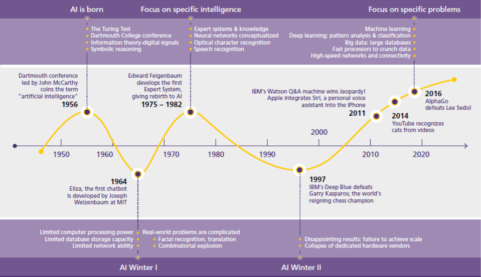
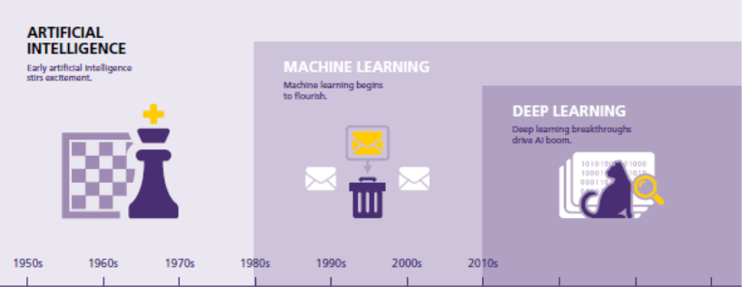
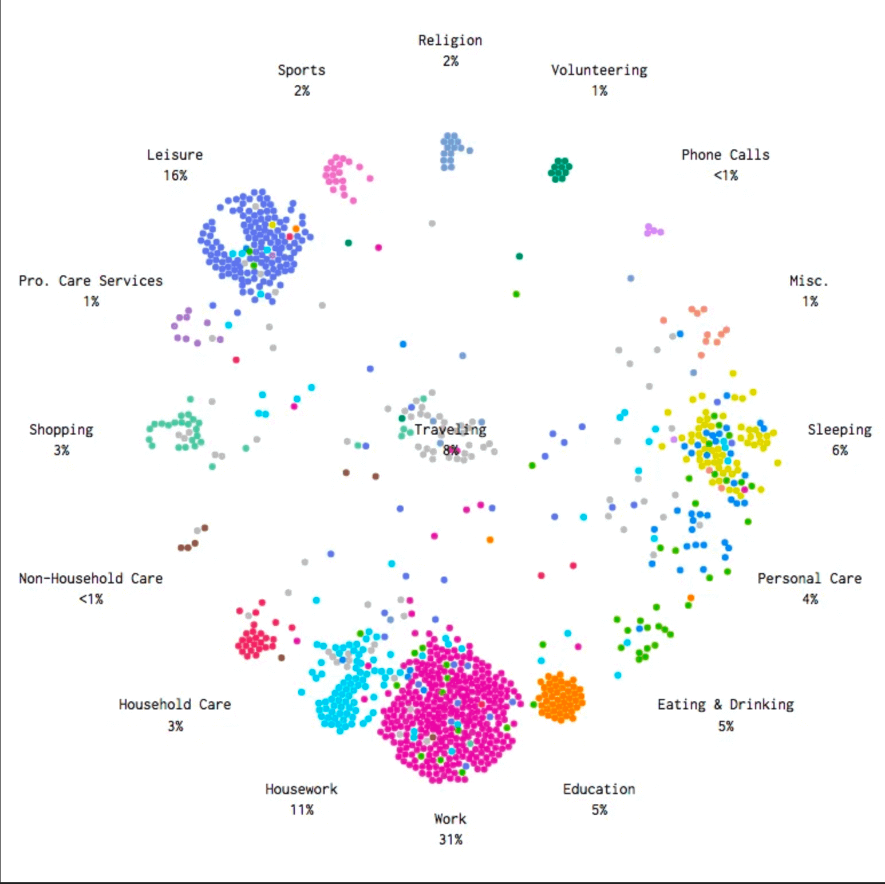
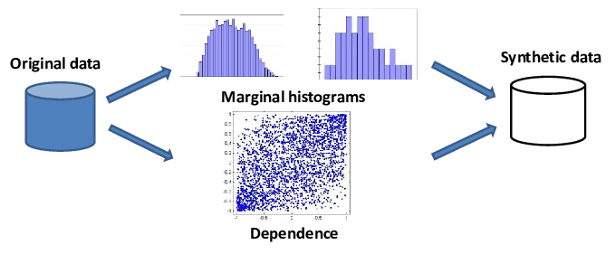

Powered by Me.
Inteligência Artificial
Todo o conteúdo é apenas para fins pessoais.
By Breno Brandão. Nov 8th, 2024.
Inteligência Artificial
A cada dia cresce o volume de dados e, consequentemente a necessidade de processamentos cada vez mais rápido. Dessa forma se torna difícil a realização desse processamento por um ser humano, por esse motivo tornou-se necessário a utilização de ferramentas computacionais para melhorar o processamento de dados, assim obtendo a resolução de problemas de forma mais rápida. Todos nós realizamos várias tarefas diariamente as quais exigem diversos processamentos por parte de nosso cérebro, responsável por administrar tudo o que pensamos e sentimos. Baseado no desempenho do nosso sistema nervoso foi desenvolvido as redes neurais artificiais, que simulam o funcionamento do cérebro humano, sendo capaz de processar e aprender com os dados obtidos. A rede neural é composta por diversas unidades, dentre elas os neurônios, que têm como função transmitir e processar dados. A rede neural artificial realiza diversas conexões e se desenvolve através de treinamentos. Dessa forma será apresentado neste trabalho o crescimento da area de inteligência artificial no que implica sobre o reconhecimento de padrões, assim como o próprio uso das redes neurais de forma prática para obter dados.
A necessidade hoje é de maior inteligência e cenários mais precisos. Em uma esfera global, as empresas estão investindo em novos tipos de dados e ferramentas de inteligência. Definindo novos indicadores, elas passam a se conhecer melhor e o mercado em que atuam para dar direcionamento ou priorizar determinadas áreas e objetivos e se posicionar mais à frente
.Pietro Delai.
- 1.1
-
PROBLEMÁTICA
- :
-
⠀⠀Há uma grande discrepância entre o potencial real do sistema de IA e as expectativas desta geração. A mídia diz que a inteligência artificial, com suas capacidades cognitivas, substituirá os empregos dos humanos.
⠀⠀No entanto, o setor de TI tem um desafio em suas mãos para atender a essas expectativas elevadas, transmitindo com precisão que a IA é apenas uma ferramenta que pode operar apenas com a indulgência do cérebro humano. A IA pode definitivamente impulsionar o resultado de algo que substituirá as funções humanas, como automação de rotina ou trabalho comum, otimizações de cada trabalho industrial, previsões baseadas em dados, etc.
⠀⠀No entanto, na maioria das ocasiões (particularmente em funções altamente especializadas), a IA não pode substituir o calibre do cérebro humano e o que ele traz para a mesa. Nem tudo que você ouve sobre IA é verdade. A IA é muitas vezes sensacionalista.
⠀⠀Dito isto o principal problema que pretendo abortar nesse trabalho é sobre a escassez de dados Com grandes empresas como Google, Facebook e Apple enfrentando acusações relacionadas ao uso antiético dos dados gerados pelo usuário, vários países, como a Índia, estão usando regras de TI rigorosas para restringir o fluxo. Assim, essas empresas agora enfrentam o problema de usar dados locais para desenvolver aplicativos para o mundo, e isso resultaria em viés.
⠀⠀Os dados são um aspecto muito importante da IA, e os dados rotulados são usados para treinar as máquinas para aprender e fazer previsões. Algumas empresas estão tentando inovar novas metodologias e estão focadas na criação de modelos de IA que podem fornecer resultados precisos, apesar da escassez de dados. Com informações tendenciosas, todo o sistema pode apresentar falhas.
- 1.2
-
OBJETIVOS
- :
-
O Objetivo deste trabalho é abordar o assunto da falta de dados precisos e seus problemas na IA
- 2.0
-
CONCEITOS E FUNDAMENTOS
- :
-
⠀⠀Ao longo da história vários filósofos e cientistas se dedicaram na análise dos vários aspectos constitutivos da inteligência humana. Posteriormente a inteligência, passou a ser estudada por outros campos do saber humano, como pela engenharia, psicologia, pedagogia, ciência cognitiva, neurologia, linguística, computação, entre outros, visando aspectos práticos e comerciais.
⠀⠀Assim como ocorreu com outras ciências que antes pertenciam ao campo de estudo da filosofia e depois se tornaram ciências independentes ou ramo de outras ciências, o mesmo ocorreu com o estudo da inteligência que hoje é alvo do estudo, na computação, pela ciência conhecida como Inteligência Artificial (IA) . Os primeiros estudos sobre IA surgiram na década de 40, juntamente com os primeiros grandes projetos de construção de computadores, e até o final do século 20, a IA estava restrita as universidades, laboratórios e instituto de pesquisa, e as aplicações práticas existentes eram em contexto muito restritos e específicos e embarcados com hardware. Em especial nesta última década, e fortemente amparada pela evolução do poder computacional das máquinas, a IA vem sendo aplicada nas mais diversas áreas da atividade econômica, sendo atualmente uma das áreas de maior pesquisa e estudo pelos diversos setores econômicos que descobriram aplicações práticas de grande valor comercial e social.
⠀⠀Conforme Figura 1 o termo Inteligência Artificial, surgiu nos Estados Unidos, em 1956, quando John McCarthy reuniu em uma conferência proferida ao Darmouth College, na Universidade de New Hampshire, vários pesquisadores que estudavam como dotar as máquinas de comportamentos inteligentes. Desde seu início, a IA tem atravessado períodos de euforia e de depressão, como mostra a figura a seguir, onde em cada fase desse histórico apresenta evoluções 16 com novas técnicas e novas aplicações, onde ocorreram diversos pontos interessantes, como o teste de Turing, a Eliza que foi o primeiro chatbot desenvolvido em 1964, e em 1997 a Deep blue desenvolvimento pela IBM ganhou o jogo de Xadres do melhor jogador a época Kasparov. . Figura 1- Linha do tempo da ascensão da IA
Figura 1  Fonte⠀⠀Desde os primórios, o termo IA foi associado a parte da Ciência da Computação que faz com que os sistemas ou máquinas exibam atributos ou comportamentos considerados como parte da inteligência humana, tais como: aprender, adquirir conhecimentos, entender linguagens, raciocinar e resolver problemas.
⠀⠀Sendo assim, o objetivo central da IA, é a criação de modelos para a inteligência e a construção de sistemas computacionais baseados nesses modelos. Este objetivo é simultaneamente teórico, (a criação de teorias e modelos para a capacidade cognitiva), e prático, a implementação de sistemas computacionais baseados nestes modelos. Em outras palavras, a IA tem se destacado na busca por compreender a inteligência e por englobar diversos campos do conhecimento com o objetivo prático de simular a inteligência (LUGER, 2004). O caráter dual deste objetivo levou, naturalmente, a pesquisa e desenvolvimento em IA cristalizaram-se em torno de três linhas de pesquisa:
• IA cognitiva: consiste no desenvolvimento de modelos formais para a inteligência humana, tema da ciência cognitiva, também chamada de psicologia computacional;
• IA básica: consiste na exploração e experimentação de técnicas computacionais que apresentem potencial para a simulação do comportamento inteligente;
• IA aplicada: é o desenvolvimento de aplicações nas mais diversas áreas das atividades econômicas (comerciais, industriais, educacionais) utilizando técnicas de IA. As técnicas da IA básica, desde seus primórdios foram divididas em dois grandes grupos ou paradigmas: IA simbólica e IA biológica.
⠀⠀Desde uma perspectiva histórica, a IA básica e aplicada, podem ser abordadas também olhando para as técnicas utilizadas e as aplicações resolvidas com essas técnicas, como mostram as figuras a seguir. Figura 2 - Representação da IA
Figura 2 
- 3.0
-
DESENVOLVIMENTO
⠀⠀A inteligência artificial comanda nosso mundo há algumas décadas e é de particular importância em todas as dimensões da vida moderna, desde as compras de supermercado até a construção de naves espaciais. Porém, por mais poderoso que tenha se tornado, seu núcleo sempre dependerá das mãos dos cientistas de dados e de dados de treinamento suficientes para o aprendizado de máquina. - 3.1
-
Aprendizado de máquina e a importância dos dados
⠀⠀Inicialmente, o aprendizado de máquina é um processo que fornece à IA dados e algoritmos reais para possibilitar que ela atue como humanos e aprenda com sua própria experiência operacional. A IA é treinada da mesma forma que cada um de nós aprende durante a vida. No entanto, há um problema significativo com a falta de dados no aprendizado de máquina. A IA requer uma certa quantidade de dados para análise, treinamento e desempenho eficientes, pois se faltar a suficiência de dados, não será possível realizar um projeto confiável.
⠀⠀A falta de dados de treinamento representa um problema crucial, também porque se a IA hesitar sobre o resultado, não sinalizará para mostrar sua incerteza, mas concluirá a operação sem quaisquer sinais preocupantes. E é aí que começa o problema. A falta de dados significa mais dúvidas ocultas sobre IA e resultados inadequados. Isso nos leva ao fato de que sem acesso é impossível preparar dados para aprendizado de máquina, e mesmo o software mais excelente não importa sem o preenchimento de dados suficiente. Sem acesso também significa que os dados são muito complicados de obter ou não existem. É por isso que grandes e promissores projetos de IA muitas vezes não são tão bem-sucedidos quanto o esperado, já que os cientistas de dados são limitados nas formas de adquirir e preparar dados para o aprendizado de máquina.
- 3.2
-
Tamanho dos dados
⠀⠀A questão sobre a quantidade certa de dados nunca sairá de moda, pois não há uma resposta universal. Cada projeto de IA requer um conjunto de dados de tamanho individual, dependendo do tipo de dados. Se os cientistas de dados trabalharem no desenvolvimento de aplicativos de visão computacional, eles certamente precisarão de mais dados do que projetos baseados em texto. No entanto, é igualmente errado superlotar ou reduzir os dados de treinamento. - 3.3
-
Poucos dados
⠀⠀A falta de dados é o problema de aprendizado de máquina mais comum, mas que pode ser corrigido. Aqui você mesmo pode coletar dados ou localizar dados abertos. É um dos resultados favoráveis do "movimento aberto" que impulsiona significativamente o aprendizado de máquina eficiente. De acordo com o freecodecamp.org , as fontes de dados abertos mais úteis a partir das quais você pode gerar grandes conjuntos de dados são: World Bank Open Data WHO (World Health Organization) Google Public Data Explorer European Union Open Data Portal U.S. Census Bureau Data.gov DBpedia UNICEF Dataset
⠀⠀A tendência do movimento aberto parece continuar ganhando impulso e tornando menos intensa a questão da escassez de dados. - 3.4
-
Muitos dados
⠀⠀Dados demais e de menos são extremos prejudiciais de projetos de IA. Embora possa parecer que quanto mais dados, melhor, não é totalmente verdade. A sobrecarga de dados tornará o aprendizado de máquina lento e ineficaz e o desviará do algoritmo definido, fornecendo muitos detalhes a serem considerados. Assim, a quantidade de dados não é o fato que mais importa. Sua limpeza sim. - 3.5
-
Dados Limpos
⠀⠀Além da escassez e da sobrecarga de dados, há um problema de limpeza de dados. A web contém toneladas de conjuntos de dados barulhentos e grandes volumes de dados não sistemáticos que inundam o espaço da web na velocidade mais alta. Qualquer pessoa pode apontar uma imagem de baixa qualidade ou uma música com ruídos extras no fundo, palavras com erros ortográficos e sites de informações falsas. Portanto, a sobrecarga de informações não significa apenas espaço aberto para iniciativas de IA, mas uma quantidade considerável de trabalho de classificação. ⠀⠀Então, de quantos dados você precisa para o aprendizado de máquina? Você terá que descobrir por si mesmo, considerando o tamanho do projeto e o tipo de dados necessários para ele. O ponto crítico é torná-lo o mais limpo possível. - 4.0
-
SOLUÇÃO
⠀⠀Coletar dados sozinho ou procurar fontes abertas não é suficiente para responder à pergunta "como gerar dados para aprendizado de máquina". Os cientistas de dados têm lutado com o problema há anos e apresentaram três maneiras significativas de lidar com o principal obstáculo da IA:
- *
-
SIMULAÇÃO DE DADOS
 Simulação de dados retratando o dia americano médio Fonte
⠀⠀Esta forma de geração de dados é baseada em técnicas de deep learning de IA. As máquinas podem ser ensinadas a responder a algoritmos de conjuntos específicos e prever respostas a vários casos. É a próxima técnica de aprendizado de máquina que ainda não está isenta de falhas e complicações. Fazer previsões com resultados confiáveis requer muitos testes e avaliações extras que nem sempre atendem às expectativas. - *
-
ROTULAGEM MANUAL DE DADOS
⠀⠀A inteligência artificial agora tem recursos de visão computacional, permitindo que as máquinas processem fotos ou dados de vídeo sem rotulá-los. Mas o resto das técnicas de aprendizado de máquina não podem passar sem rotular porque a IA não pode identificar dados sem dicas humanas. A criação de dados personalizados é um processo demorado, sem escalabilidade e ajustabilidade. - *
-
GERAÇÃO DE DADOS SINTÉTICOS
Geração de dados sintéticos. Fonte
Na era do Big Data, permanecer anônimo e não identificado é quase impossível. Porém, os dados sintéticos tornam real o fechamento em um sistema hermenêutico, permitindo testar seu projeto com segurança, gerando dados que podem nem existir. ⠀⠀Os dados sintéticos são o tipo de geração de dados mais barato e conveniente para o aprendizado de máquina, que não requer entrada manual. Dados artificiais ou sintéticos são iguais aos dados originais, privados de informações pessoais dos usuários. Os cientistas de dados usam-no como uma amostra, onde a exposição de dados de pessoas reais não é desejável. Assim, a privacidade é o principal benefício da geração de dados sintéticos, pois dá muito espaço para treinamento e desenvolvimento de software, mantendo as informações pessoais dos clientes intactas. ⠀⠀Projetos de IA relacionados a negócios tiram a vantagem mais significativa do uso de dados sintéticos. Ele se concentra nos três aspectos principais - teste autêntico, treinamento de algoritmos de aprendizado de máquina e ameaça zero de dados. Com a geração de dados sintéticos, não há necessidade de escolher entre privacidade e utilidade de dados. Os cientistas de dados podem usar quase 100% dos dados sintéticos na análise de big data e aprendizado profundo. Como resultado, terceirizar a geração de dados sintéticos pode ser a resposta quando você não tem nenhuma para o seu projeto. - *
-
IA E O COVID19
⠀⠀A inteligência artificial inteligente pode parecer funcionar bem no ambiente cotidiano. No entanto, ele experimenta contratempos significativos durante qualquer crise em evolução. Se as pessoas são facilmente adaptáveis a quase todas as mudanças externas possíveis, os sistemas de IA não são, pois não podem gerar novas soluções saindo da estrutura predefinida. O sistema está programado para operar sem ajuda humana, e este fato coloca restrições na escala de um possível ajuste manual. ⠀⠀O ajuste do surto de COVID-19 mais uma vez mostrou a fragilidade e rigidez da IA diante de circunstâncias extraordinárias. A escassez de dados no COVID-19 resultou na falta de confiabilidade dos sistemas de saúde de IA e falhas nas previsões devido a algoritmos de dados em tempo real desatualizados. ⠀⠀O segmento de mercado é o menos afetado, pois o e-commerce salvou o nicho e teve um aumento notável nas vendas . No entanto, os algoritmos de IA sofreram uma grande interrupção. Os itens mais vendidos de costume foram substituídos por itens relacionados ao COVID que tiveram que ser identificados e estocados dentro de um tempo limitado. Essas mudanças repentinas causaram falhas no algoritmo, provando sua deficiência no momento da crise e alto nível de dependência dos dados de treinamento. - 5.0
-
CONCLUSÃO
⠀⠀A falta de dados no aprendizado de máquina ainda é o ponto mais fraco da IA. Sem uma quantidade substancial de informações de treinamento, as máquinas não podem mostrar alto desempenho e resultados confiáveis, assim como os humanos raramente encontram uma saída para situações nas quais nunca estiveram ou mesmo das quais ouviram falar. No entanto, existem soluções de geração de dados e a lista de fontes abertas aumenta, permitindo que os cientistas de dados diminuam a gravidade do problema de escassez de dados. - 6.0
-
REFERÊNCIAS
BRAGA, Antônio de Pádua; LUDERMIR, Teresa Bernarda; CARVALHO, André Carlos Ponce de Leon. Redes Neurais Artificiais: Teoria e aplicações. Rio de Janeiro: Ltc, 2000. COPPIN, Ben. Inteligência Artificial. Rio de Janeiro: Ltc, 2013. DATA SCIENCE CADEMY (Org.). Introdução à Ciência de Dados 2.0. Disponível em: https://www.datascienceacademy.com.br. Acesso em: 01 nov. 2021. DATA SCIENCE CADEMY (Org.). Python Fundamentos para Análise de Dados. Disponível em: https://www.datascienceacademy.com.br. Acesso em: 20 out. 2021. DEEP Learning Book. Disponível em: http://deeplearningbook.com.br/o-que-sao-redesneurais-artificiais-profundas. Acesso em: 03 set. 2021. DEEP LEARNING BOOK (Org.). Campos Receptivos Locais em Redes Neurais Convolucionais. Disponível em: http://deeplearningbook.com.br/campos-receptivos-locaisem-redes-neurais-convolucionais. Acesso em: 17 nov. 2021.